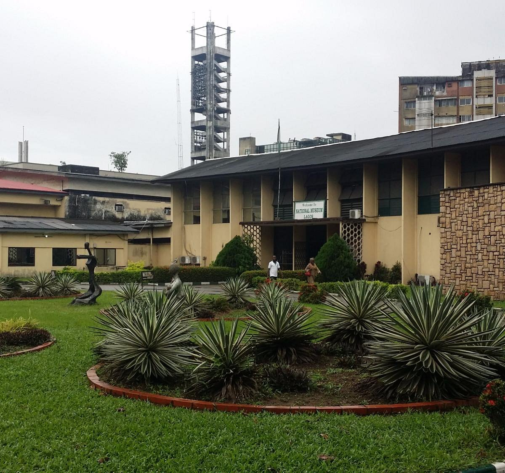

Introduction
Lagos State, located in the southwestern region of Nigeria, is the most populous and economically significant state in the country. Known as the "Center of Excellence," Lagos is the commercial capital of Nigeria and one of the fastest-growing cities in the world. The state is famous for its vibrant economy, diverse culture, and bustling urban life.
Geography and Climate
Lagos is bordered by Ogun State to the north and east, and the Atlantic Ocean to the south. The state's geography includes a mix of islands, lagoons, and coastal plains, making it a unique blend of land and water. The climate is tropical, with a wet season from April to October and a dry season from November to March.
Culture and People
Lagos is a melting pot of cultures, with a diverse population that includes people from all over Nigeria and beyond. The state is known for its vibrant arts scene, music, and festivals. The Eyo Festival, held in Lagos Island, is one of the most iconic cultural events in Nigeria, featuring colorful masquerades and traditional music. Lagos is also the birthplace of Afrobeats, a genre that has gained international recognition.
Economic Activities
Lagos State is the economic powerhouse of Nigeria, contributing significantly to the country's GDP. The state is home to the largest seaport in West Africa, making it a major hub for trade and commerce. Lagos is also a center for finance, technology, and entertainment, with a thriving startup ecosystem and a booming film industry, known as Nollywood.
Tourist Attractions
Lagos offers a wide range of tourist attractions, from beautiful beaches to historical sites. The Lekki Conservation Centre, a haven for wildlife enthusiasts, offers a peaceful escape from the hustle and bustle of the city. The National Museum in Onikan provides a glimpse into Nigeria's rich history, while the Freedom Park, a former colonial prison turned cultural center, hosts various events and exhibitions. Other notable attractions include the Lagos Bar Beach, Tarkwa Bay, and the Nike Art Gallery.
Education and Innovation
Lagos is a leading center of education and innovation in Nigeria. The state is home to several prestigious institutions, including the University of Lagos and Lagos State University. Lagos also boasts a vibrant tech community, with numerous tech hubs and incubators supporting startups and entrepreneurs.
Lekki Conservation Centre:
This urban oasis provides a serene escape from the city’s hustle, featuring a canopy walkway that offers breathtaking views of the surrounding landscape.
Victoria Island:
Known for its upscale ambiance, Victoria Island is home to luxury hotels, fine dining, and high-end shopping, reflecting Lagos’s cosmopolitan side
National Museum Lagos:
An invaluable repository of Nigeria’s history and culture, this museum houses a rich collection of artifacts, including ancient sculptures, traditional crafts, and historical relics.
Conclusion
Lagos State is a dynamic and vibrant destination that offers something for everyone. Whether you're interested in exploring its cultural heritage, engaging in business, or simply enjoying the lively atmosphere, Lagos is a city that never sleeps and never disappoints.